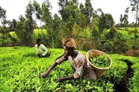
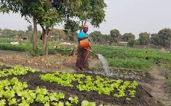
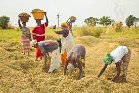
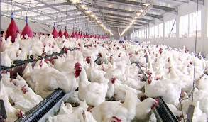

Agriculture au Sénégal
L'agriculture sénégalaise est essentiellement pluviale et saisonnière. Elle repose à la fois sur des cultures de rente (arachide coton) et sur des cultures vivrières de subsistance (mil, sorgho, maïs). Le riz, culture traditionnelle en Casamance, se développe fortement dans la vallée du fleuve Sénégal.

L'agriculture rurale
La population rurale représente 55 % de la population totale du Sénégal, évaluée à 13,5 millions en décembre 2013. Le secteur agriculture-pêche est un secteur économique important; il contribue à 14 % du PIB et occupe 50 % environ de la population active.

L'arachide au Sénégal
L'arachide est cultivée par plus de 100 pays dans le monde. Au Sénégal, dans les années 1960, la culture de l'arachide s'était développée comme culture de rente (production d'huile et de tourteau) destinée à l'exportation avec une ouverture croissante sur le marché mondial..jpg)
.jpg)
Les estimations du ministère de l’Elevage situent les effectifs à 3,4 millions de bovins et 6,2 millions d’ovins en 2014, auxquels s’ajoutent les échanges transfrontaliers avec les pays voisins (Mali, Mauritanie) pour alimenter les marchés urbains sénégalais. La demande continue d’augmenter plus rapidement que l’offre, et le mouvement semble s’accélérer depuis le début des années 2000 (notamment pour les moutons de la Tabaski). Pour soutenir le développement de l’élevage, le gouvernement met en place de nombreux dispositifs, qui ont été réaffirmés à travers le Plan Sénégal Emergent, dont le premier pilier vise la transformation de l’agriculture au sens large. Ces efforts sont salués mais sont jugés insuffisants par les éleveurs, qui souhaiteraient que les financements soient davantage orientés vers les besoins des exploitations agropastorales. Il est notamment proposé de : Cibler les appuis vers les exploitations familiales agropastorales et leurs projets de transformation Favoriser la concertation entre acteurs au sein des filières Renforcer le lien des éleveurs au marché et promouvoir le lait local Réduire l’insécurité foncière et garantir le droit à la mobilité Défendre une politique régionale de l’élevage plus ambitieuse

L'élevage Agropastoral
L’élevage occupe une place fondamentale dans les pays d’Afrique de l’Ouest, avec un effectif régional de bovins estimé à plus de 65 millions de têtes, plus de 200 millions d’ovins et caprins, et 2,6 millions de camelins. Faisant vivre plusieurs millions d’exploitations familiales, le cheptel représente pour toute ces familles un capital, une activité génératrice de revenus, une source d’épargne, mais aussi de résilience face aux crises, ainsi qu’un référent culturel fort. Le Sénégal occupe une place un peu à part dans ce paysage. Loin d’être comparable aux grands pays pastoraux en termes d’effectifs, l’élevage génère tout de même 35 % de la valeur ajoutée du secteur agricole (MEPA, 2013) et 7,5 % du PIB national. A côté de la grande zone pastorale du Ferlo, il contribue aussi fortement dans tout le pays au dynamisme agricole et au développement de pratiques agro-écologiques à travers l’intégration agriculture-élevage..jpg)
L'élevage pastoral
Les systèmes d'élevage pastoraux sont ceux pour lesquels plus de 90 % de la matière sèche consommée par le bétail provient du pâturage. La limite avec les systèmes mixtes élevage-agriculture dans lesquels plus de 10 % de la matière sèche provient des sous-produits de l'agriculture est fluctuante..jpg)